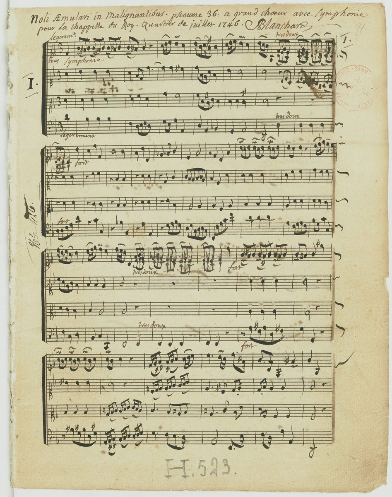

Psalm 37 — The Mister Translation

The first page of a choral setting of this psalm for the French royal chapel, in the composer’s own hand. The heading reads “Noli aemulari in malignantibus, psalm 36, for large choir with orchestra, for the King’s chapel, July quarter 1746”. Noli aemulari in malignantibus, “Do not be jealous of the wicked”, is the Latin of verse 1, the line rendered here “Do not get heated over evildoers”; the Latin Bible counts the psalm as 36.
_-_btv1b10023083z_(01_of_52).jpg){kind=link}
Translator's Notes — verse by verse
An alphabet. Psalm 37 is an acrostic: each pair of verses, or close to it, begins with the next letter of the Hebrew alphabet, from alef in verse 1 to tav in verse 39, and the letters are marked at the start of each section here, as in Proverbs 31:10–31 (now on these pages). One letter is missing at the head of its line, ayin, the sixteenth; the note at verse 28 shows where it hides. The form is a teaching form, a whole subject laid out from A to Z. Some printed Bibles set the letter names into the text itself. The KJV opens “Fret not thyself because of evildoers”; the ASV “Fret not thyself because of evil-doers”.
Do not get heated. “Of David. Do not get heated over evildoers; do not envy those who do wrong”: al-titchar, from charah, to burn, so “do not let yourself burn”. It comes three times in eight verses (1, 7, 8), and the whole line “do not get heated over evildoers” stands in two verses of the Hebrew Bible, here and Proverbs 24:19. “Like grass they will quickly wither” is Isaiah’s image too, “the grass withers, the flower fades” (Isaiah 40:7, now on these pages). The NWT 1984 has “Do not show yourself heated up because of the evildoers”; the NIV “Do not fret because of those who are evil”; the Douay “Be not emulous of evildoers”.
Tend faithfulness. “Trust in Jehovah and do good; dwell in the land and tend faithfulness”: re’eh emunah, with the shepherd’s verb, and three ways to take it: “feed on faithfulness”, as a flock feeds; “befriend faithfulness”, from a verb of the same letters; or “shepherd faithfulness”, keep it as a shepherd keeps sheep. The phrase stands in one verse of the Hebrew Bible. The Greek has “you will be shepherded on its wealth”. The ASV has “Dwell in the land, and feed on his faithfulness”; the NWT 1984 “Reside in the earth, and deal with faithfulness”; the KJV “and verily thou shalt be fed”.
Delight and roll. “And delight yourself in Jehovah, and he will give you the requests of your heart”: hit’anneg, from anog, the word for luxury and daintiness, turned toward God. “Roll your way onto Jehovah”: gol, from galal, to roll a weight off oneself and onto another, the picture behind “casting all your anxiety on him” (1 Peter 5:7, now on these pages). “Roll onto” in this form stands in one verse of the Hebrew Bible. The NWT 1984 has “Roll upon Jehovah your way”; the ASV “Commit thy way unto Jehovah”; the NIV “Commit your way to the Lord”.
Wait in silence. “Wait for Jehovah in silence, and long for him”: dom, from damam, to be still, the word of “Sun, be still at Gibeon” (Joshua 10:12, now on these pages), here the silence of waiting. Hitcholel, “long for him”, is from a verb of writhing, a waiting that aches. The NWT 1984 has “Keep silent before Jehovah And wait longingly for him”; the ASV “Rest in Jehovah, and wait patiently for him”; the NIV “Be still before the Lord and wait patiently for him”.
Let go of anger. “Let go of anger, and forsake wrath; do not get heated — it leads only to evil”: heref, from raphah, the verb of “Let go, and know that I am God” (Psalm 46:11, now on these pages), here a grip on one’s own anger. The ASV has “Cease from anger, and forsake wrath”; the NWT 1984 “Let anger alone and leave rage”; the NIV “Refrain from anger and turn from wrath”.
Possess the land. “Those who hope in Jehovah — they will possess the land … But the humble will possess the land”: yarash, the verb of Israel taking the land, “Go in and take possession of the land” (Deuteronomy 1:8, now on these pages). “They will possess the land” stands in five verses of the Hebrew Bible, four of them in this psalm (9, 11, 22, 29) and the fifth Isaiah 60:21, and verse 34 adds a fifth in the psalm, “to possess the land”. The anavim are the humble, the ones brought low. Jesus takes up verse 11 in the Greek, “Happy the meek — for they shall inherit the earth” (Matthew 5:5, now on these pages); erets is both “land” and “earth”, and the psalm, with its talk of dwelling and inheritance, is speaking of the land. The ASV has “But the meek shall inherit the land, And shall delight themselves in the abundance of peace”; the KJV “But the meek shall inherit the earth”; the NWT 1984 “But the meek ones themselves will possess the earth”.
He sees that his day is coming. “The wicked plots against the righteous, and gnashes his teeth at him. The Lord laughs at him, for he sees that his day is coming”: zomem, from zamam, the verb of a settled purpose, used of the false witness who “plotted to do to his brother” (Deuteronomy 19:19, now on these pages). The laughter is the laughter of Psalm 2, where “the one enthroned in heaven laughs” (Psalm 2:4). The ASV has “The wicked plotteth against the just, And gnasheth upon him with his teeth”; the NWT 1984 “The wicked one is plotting against the righteous one”; the KJV “The Lord shall laugh at him”.
Their own heart. “The wicked have drawn the sword and bent their bow, to bring down the afflicted and the needy … Their sword will enter their own heart, and their bows will be broken”: the weapon turns back on the one who drew it. “Better is a little for the righteous than the abundance of many wicked”, a line Proverbs makes its own, “Better is a little with the fear of Jehovah” (Proverbs 15:16). “For the arms of the wicked will be broken, but Jehovah upholds the righteous”: the arm is the strength that drew the bow. The ASV has “Better is a little that the righteous hath Than the abundance of many wicked”; the NWT 1984 “Better is the little of the righteous one”; the NIV “Better the little that the righteous have”.
In days of famine. “Jehovah knows the days of the blameless, and their inheritance will be forever. They will not be put to shame in an evil time, and in days of famine they will be satisfied”: temimim, the whole-hearted; and “knows” is the knowing that cares for, as in “Jehovah knows the way of the righteous” (Psalm 1:6, now on these pages). The ASV has “Jehovah knoweth the days of the perfect”; the NWT 1984 “Jehovah is aware of the days of the faultless ones”.
The splendor of the meadows. “And the enemies of Jehovah are like the splendor of the meadows; they vanish — in smoke they vanish”: kiqar karim, and the phrase stands in one verse of the Hebrew Bible. Karim can be meadows or lambs, and yeqar is preciousness or splendor; so either the brief glory of a spring meadow, like the grass of verse 2, or the fat of lambs burned on the altar and gone up in smoke. The older shelf reads the second: the KJV “shall be as the fat of lambs: they shall consume; into smoke shall they consume away”. The NWT 1984 has “like the preciousness of pastures”; the NIV “like the flowers of the field”.
Borrow and give. “The wicked borrows and does not repay, but the righteous is gracious and gives. For those blessed by him will possess the land, but those cursed by him will be cut off”: the generous man of verse 21 returns in verse 26, “all day long he is gracious and lends”. The ASV has “The wicked borroweth, and payeth not again; But the righteous dealeth graciously, and giveth”; the NWT 1984 “The wicked one is borrowing and does not pay back”.
Though he falls. “By Jehovah a man’s steps are made firm, and he delights in his way. Though he falls, he will not be hurled down, for Jehovah upholds his hand”: the promise is not that he never falls, but that he is not flung down to stay there. The ASV has “Though he fall, he shall not be utterly cast down”; the NWT 1984 “Although he may fall, he will not be hurled down”; the KJV “Though he fall, he shall not be utterly cast down”.
Young, and now old. “I have been young, and now I am old, yet I have not seen the righteous forsaken, nor his offspring seeking bread”: the one place the psalm speaks in its own voice, an old man’s testimony from a long life. It is a witness, not a guarantee, and the Bible sets other witnesses beside it: the book of Job, the psalmist who saw the wicked prosper (Psalm 73), and Lazarus at the rich man’s gate (Luke 16:20, now on these pages). Mevaqqesh lachem, “seeking bread”, is begging. The ASV has “I have been young, and now am old; Yet have I not seen the righteous forsaken, Nor his seed begging bread”; the NWT 1984 “Nor his offspring looking for bread”; the Douay “nor his seed seeking bread”.
The hidden ayin. “For Jehovah loves justice and will not forsake his loyal ones; they are kept forever, but the offspring of the wicked will be cut off”: the ayin line should begin here, and no line does; the letter stands instead inside the verse, in le-olam, “forever”. The Greek has an extra clause, “but the lawless will be driven out”, which in Hebrew would begin with ayin, and many think it preserves the missing line; the Hebrew does not have it, and this translation follows the Hebrew. The chasidim are the “loyal ones”, those who keep kindness. The NWT 1984 puts the letter ע at “To time indefinite”; the Douay, from the Latin, has the Greek’s clause, “The unjust shall be punished”; the ASV “For Jehovah loveth justice, And forsaketh not his saints”.
Murmurs wisdom. “The mouth of the righteous murmurs wisdom, and his tongue speaks justice”: yehgeh, from hagah, the low voiced murmur of reading and turning words over, “you shall murmur over it day and night” (Joshua 1:8) and “on his law he meditates day and night” (Psalm 1:2, both now on these pages). “The law of his God is in his heart” is Jeremiah’s new covenant already in one man, “I will put my law within them, and write it on their heart” (Jeremiah 31:32, now on these pages). The ASV has “The mouth of the righteous talketh of wisdom”; the NWT 1984 “The mouth of the righteous is the one that utters wisdom”; the KJV “The law of his God is in his heart; none of his steps shall slide”.
Hope in Jehovah. “The wicked watches for the righteous and seeks to put him to death. Jehovah will not leave him in his hand … Hope in Jehovah and keep his way, and he will raise you up to possess the land”: qavveh, the verb of verse 9, “those who hope in Jehovah”. The last “possess the land” comes as a call, not a statement. The ASV has “Wait for Jehovah, and keep his way, And he will exalt thee to inherit the land”; the NWT 1984 “Hope in Jehovah and keep his way”; the NIV “Hope in the Lord and keep his way”.
A luxuriant native tree. “I have seen a wicked man, ruthless, spreading himself like a luxuriant native tree”: ezrach is the native-born, here a tree in its own soil, deep-rooted and green; the phrase stands in one verse of the Hebrew Bible. The Greek read “like the cedars of Lebanon”, and so the Douay has “lifted up like the cedars of Libanus”. “And he passed on, and look — he was gone”: what verse 10 promised, “you will look closely at his place, and he will not be there”. The KJV has “spreading himself like a green bay tree”, which entered English as a proverb; the ASV “like a green tree in its native soil”; the NWT 1984 “as a luxuriant [tree] in native soil”.
An outcome for the man of peace. “Watch the blameless and see the upright, for there is an outcome for the man of peace. But transgressors will be destroyed together; the outcome of the wicked will be cut off”: acharit, the after-part, what a life comes to, the word of “to give you an outcome and a hope” (Jeremiah 29:11, now on these pages), and here also posterity. The Greek has “there is a remnant for the peaceable man”. The ASV has “For there is a happy end to the man of peace”; the NWT 1984 “For the future of [that] man will be peaceful”; the KJV “for the end of that man is peace”.
Their stronghold. “And the salvation of the righteous is from Jehovah, their stronghold in the time of distress … because they take refuge in him”: ma’uzzam, the word of “Jehovah is the stronghold of my life” (Psalm 27:1), and chasu, the verb of “under his wings you will take refuge” (Psalm 91:4, both now on these pages). The alphabet ends on tav with teshu’at, “salvation”. The ASV has “But the salvation of the righteous is of Jehovah; He is their stronghold in the time of trouble”; the NWT 1984 “because they have taken refuge in him”; the NIV “because they take refuge in him”.
Patterns worth carrying forward
Where this translation keeps the words exact and distinct: “do not get heated” for al-titchar, in verses 1, 7 and 8 alike; “tend faithfulness”; “roll your way” for gol; “wait for Jehovah in silence” for dom; “let go” for heref, as in Psalm 46:11; “possess the land” for yarash, as in Deuteronomy 1:8; “the humble” for anavim; “murmurs” for hagah, as in Joshua 1:8; “outcome” for acharit, as in Jeremiah 29:11; and the alphabet marked letter by letter, with the hidden ayin left where the Hebrew leaves it.
Echoes paid. The grass of Isaiah 40; the stillness of Joshua 10; the “let go” of Psalm 46; the land of Deuteronomy 1; the murmuring of Joshua 1 and Psalm 1; the law on the heart of Jeremiah 31; the stronghold of Psalm 27 and the refuge of Psalm 91.
Echoes planted. “Do not get heated over evildoers” again (Proverbs 24:19); the one enthroned who laughs (Psalm 2:4); the prosperity of the wicked (Psalm 73); and “they will possess the land forever” (Isaiah 60:21). None is translated here yet.
⚠ A note on order: the Psalms stand on these pages at 1, 23, 27, 34, 37, 46, 51, 56, 91, 100, 103, 119, 121 and 139, chosen by how often they are read rather than in sequence. The sequential thread is unchanged: next in sequence is Psalm 2.